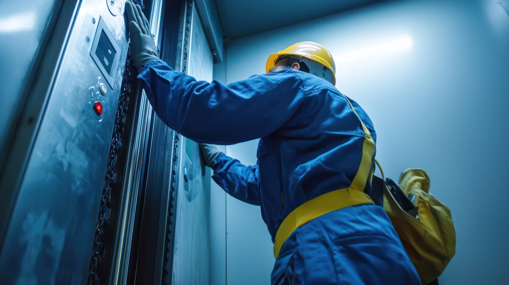
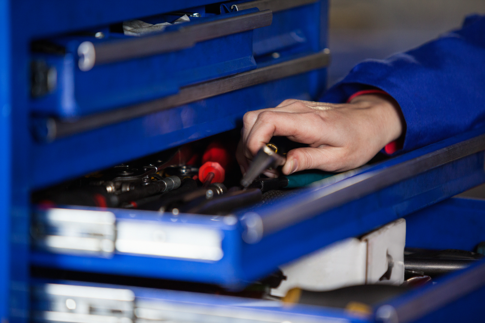

종합 유지관리
FM (Full Maintenance)
사용중인 엘리베이터의 성능유지와 효율적인 최상의 서비스를 위해
점검, 수리, 예방활동등을 일괄하여 종합적으로
특별관리를 진행하는 고급형 유지 관리 서비스

그린엘리베이터는 체계적인 유지관리 시스템과 핵심기술로 엘리베이터 신개념의 유지관리 시스템 구축을 위해
지속적인 투자로 신기술 도입 적용과 시스템 현대화로 새로운 지평을 열어갑니다.

사용중인 엘리베이터의 성능유지와 효율적인 최상의 서비스를 위해
점검, 수리, 예방활동등을 일괄하여 종합적으로
특별관리를 진행하는 고급형 유지 관리 서비스
사용중인 엘리베이터의 주기적인 점검을 통하여 예방정비를 실시하며,
부품교체, 수리공사 서비스는 별도의 계약으로 시행

전문인력이 365일 24시간 항상 고객님 곁에서
엘리베이터의 이용에 불만이 없도록 지켜드립니다.
효율적 지속 관리를 통한
수명 연장 가능
준비없는 과도한 수리비용 및
공사비용의 지출 예방
특별 예방정비 활동을 통한
안전성 확보
단순 유지관리는 예상치 못한 수리비로 이어질 수 있습니다.
FM 계약은 예방정비를 통해 비용 부담을 줄이고,
승강기의 안전성과 수명을 높입니다.

| 항목 | FM(종합유지관리) | POG (단순유지관리) |
|---|---|---|
| 유지관리 형태 | 좌동 | 좌동 |
| 책임의 한계 | 일원화(점검, 수리, 예방) | 이원화(점검/ 수리,예방) |
| 계약 기간 | 좌동 | 좌동 |
| 부품확보 및 교체 | 부품 사전확보로 즉각 대응가능 장기 운행중단 예방 | 부품 사후 확보로 고장 수리 시간 과다 예상 |
| 부품교체 비용 | 계약비용에 포함 | 유상(별도 비용 처리) |
| 수리공사 비용 | 계약비용에 포함 | 유상(별도 비용 처리) |
| 법정검사 비용 | 계약비용에 포함 | 고객부담 |
| 법정검사 신청 | 계약비용에 포함 | 고객신청 |
| 제품의성능보장 | 가능 | 일부가능 |
| 안전검사 | 가능 | 불가(별도 비용처리) |
| 품질검사 | 가능 | 불가(별도 비용처리) |